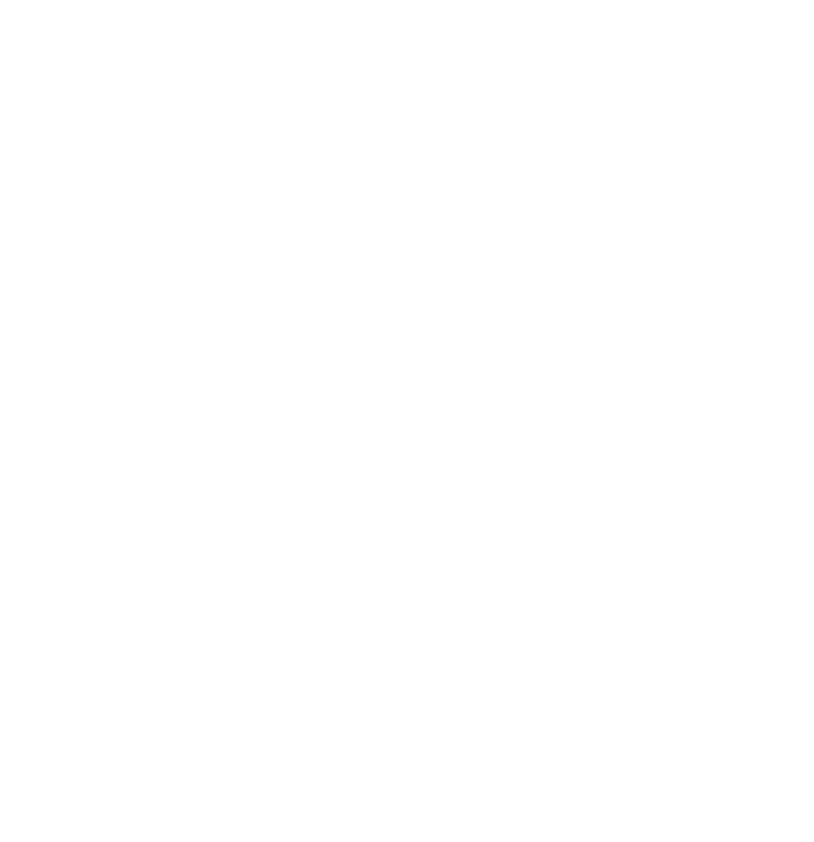

生物記録システム
データ読込
データ編集
観察記録
境界読込

マップ

リスト

グリッド

ボード
動物界
植物界
菌界
種名:
科:
属:
座標:
発見日:
都道府県市町村:
絶滅危惧種:
指定なし
準絶滅危惧(NT)
絶滅危惧II(VU)
絶滅危惧IB(EN)
絶滅危惧IA(CR)
情報不足(DD)
詳細:
画像を選択
記録
すべて
動物界
植物界
菌界
エリア検索
エリア解除
ピン更新
全画面表示
ヒートマップ表示
更新
非表示
すべて
植物界
動物界
菌界
画像
種名
科
属
座標
発見日
都道府県市町村
記録時間
すべて
植物界
動物界
菌界
戻る
【絶滅危惧分類】
【科】
【属】
【発見地】
【発見日】
【座標】
【詳細】
【周辺地図】
Wikipediaより引用
編集する記録を選択:
動物界
植物界
菌界
種名:
科:
属:
座標:
発見日:
都道府県市町村:
絶滅危惧種:
指定なし
準絶滅危惧(NT)
絶滅危惧II(VU)
絶滅危惧IB(EN)
絶滅危惧IA(CR)
情報不足(DD)
詳細:
画像を選択
更新
ファイル保存